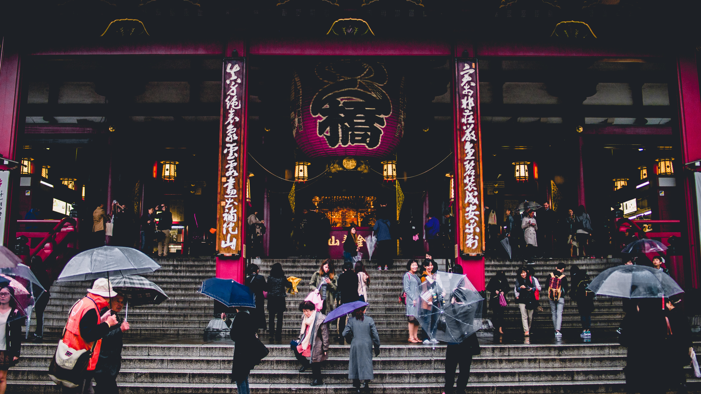
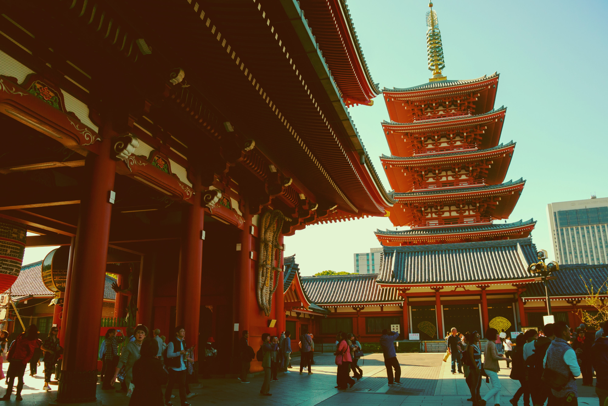

1. Overview
Praying at the temples and shrines in Japan is largely out of tradition rather than a full-blown belief in the tenets of each religion; Japan is a nation of traditionalists rather than believers in the church-going sense. Today there are about 160,000 shrines and temples throughout Japan. Shrines are associated with Shinto; temples with Buddhism.
The act of visiting and praying at a shrine of a temple is called omairi; when this is done for the new year, it is called hatsu-moude. It follows a strict routine to not only to calm one’s heart, but also to please the kami residing within. Certain steps need to be followed when one wants to properly visit a shrine or temple and communicate with the kami or Buddha within.
When you’re visiting a shrine, you enter its precincts by going through a gate, called a torii. This gate both marks where the realm of Shinto kami begins and separates it from the secular world. The precincts Buddhist temples are entered via a gate called ‘sanmon.’ By entering the grounds through either gate, you are stepping onto sacred grounds: be aware of this. Prepare your mind and your heart, calm yourself, and appreciate everything around you, be it visible or not.
MAYBE YOU DIDN'T KNOW
Hatsumode

Hatsumode is a New Year's tradition of Japan that consists of visiting a shrine or temple at the very beginning of the year to pray.
Learn more2. The difference between shrines and temples
Shinto Shrines
Shinto is indigenous to Japan. A polytheistic religion, believers hold that gods or spirits (kami) are all around us, existing in the same world and interacting with, and residing in, natural objects and places. Such is the freedom of the religion that you can buy a kamidana—a small shrine for the home designed to house a god. Shinto is rooted in Japan’s earliest history and it is likely that the title of emperor derived from the role of chief Shinto priest.
Buddhist Temples
Buddhism came to Japan via Korea in the middle of the 6th century, and today there are six major sects. Buddhism’s successful rooting in Japanese society, despite an already dominant indigenous religion, owes much to its adoption by the Soga during the 6th and 7th century, as well as the Kamakura era when two of the most popular sects—Jōdo-shū and Zen—were formed.
How to distinguish between shrines and temples?
To the uninitiated, shrines and temples can be quite hard to distinguish. The first way to tell is often from the Japanese name. The word for shrine is jinja (神社) and for temples it is o-tera (お寺), and the kanji will be suffixed to the name of the shrine or temple. For example, Nezu Shrine in Yanaka is called Nezu-Jinja (根津神社) and Asakusa’s most famous temple—Senso-ji (浅草寺)—takes its final character from the word for temple. In the case of Shinto shrines you may also see the character gū (宮) being used instead, e.g. Meiji Shrine near Yoyogi Park is called Meiji-Jingu (明治神宮).
Secondly, shrines have a simple gate, called a torii, that separates the human world and sacred ground, while the gates of a temple, called a sanmon, look more like a large house rather than a gate. Thirdly, temples almost always have Buddhist images and statues, while shrines do not.
3. How to visit the shrines
Bow slightly before entering the torii gates, and keep in mind to walk on the side of the path to the shrine rather than in the middle. The middle of the path and the torii are for the gods, not for humans.
Purification at the Temizuya

Every shrine and temple features a water basin, called a ‘temizuya’ or ‘chōzuya,’ at which worshipers are supposed to purify themselves, literally and figuratively. This purification follows a strict order:
1 - First, take the wooden ladle in your right hand, fill it with water, and pour the water over your left hand.
2 - Take the ladle in the left hand and clean your right hand respectively.
3 - Then, pour water into the palm of your left hand, bring it up to your face and rinse your mouth. To not drink the water; instead, spit it out again.
4 - Clean your left hand once more. Then, lift the ladle in a vertical position to clean it with the remaining water before putting it back.
Praying at a shrine:

Just like the purification, the actual worship is also ritualized. A general rule of thumb when going to a shrine and temple to worship: in a shrine, it is always two bows, two claps, one bow. At Buddhist temples, however, there’s no clapping at all.
1 – First, throw a coin, usually 100 or 50 yen, in the offering box.
2 - Should there be a bell or gong, ring it firmly for a few times, as this helps get the attention of the kami. Then bow twice, deeply, at 90 degrees. After bowing, clap your hands twice. Should you want to pray, do so after clapping – and do it quietly. Kami do not require spoken words.
3 - After you are done, bow one more time, just as deeply as before.
4. How to visit the temples
The same rules apply as those of visiting a shrine - bow slightly before entering, walk to the sides, and purify yourself at the chozuya; however, the manner in which you pay respect varies.
1 – Throw a coin in the offering box.
2 – Should there be a temple gong, ring it firmly for a few times. Instead of clapping, just press your hands together in front of your chest and pray quietly.
3 – Bow once after you are done praying.
5. More to explore
What to wish for
While the terms “prayer” and “praying” are often used to explain the ways of worship at both shrines and temples, the kind of praying is actually quite different depending on whether you’re at a temple or shrine. At a shrine, people usually wish for happiness during their life or even specific situations, such as exams or job interviews. At a temple, however, people pray for entering paradise in the afterlife. Apart from that, shrine worship is generally linked to purifying oneself of impurities, while temple prayers are often reflections upon one’s behavior and vows to improve it from now on.
Next steps

After paying your respects, at shrines you can purchase ema, which are small wooden plaques in which you write your wishes and then hang them to be received by the gods. Hamaya, which are “holy arrows” that people decorate at home to ward off evil spirits, and different kinds of omamori, or amulets, such as for road safety and easy baby delivery, are popular souvenirs. Commemorative stamps called shuin are offered at both shrines at temples as a memento of having paid your respects.
Furthermore, for usually only 100 yen, you can purchase an omikuji, a slip of paper with fortunes written on it; depending on your fortune, you can either keep them or tie them to a rope. While mostly in Japanese, some
shrines offer English copies of the fortunes as well. Omikuji fortunes are classified as follows (from best to worst):
dai-kichi (大吉) - great blessing
chuu-kichi (中吉) - middle blessing
sho-kichi (小吉)
- small blessing
kichi (吉) - blessing
sue-kichi (末吉) - ending blessing
kyo (凶) - curse
dai-kyo (大凶) - great curse
Additionally, omikuji have advice for different aspects of the upcoming
year, such as travel, relationships, health, and wishes. Next time you visit a Japanese shrine or temple, don’t just take pictures - experience it by paying your respects and following these easy steps.
MAYBE YOU DIDN'T KNOW
Omikuji

Omikuji are fortune slips you can get shrines and temples in Japan.
Learn more
MAYBE YOU DIDN'T KNOW
Omikuji
Omikuji are fortune slips you can get shrines and temples in Japan.
Learn more